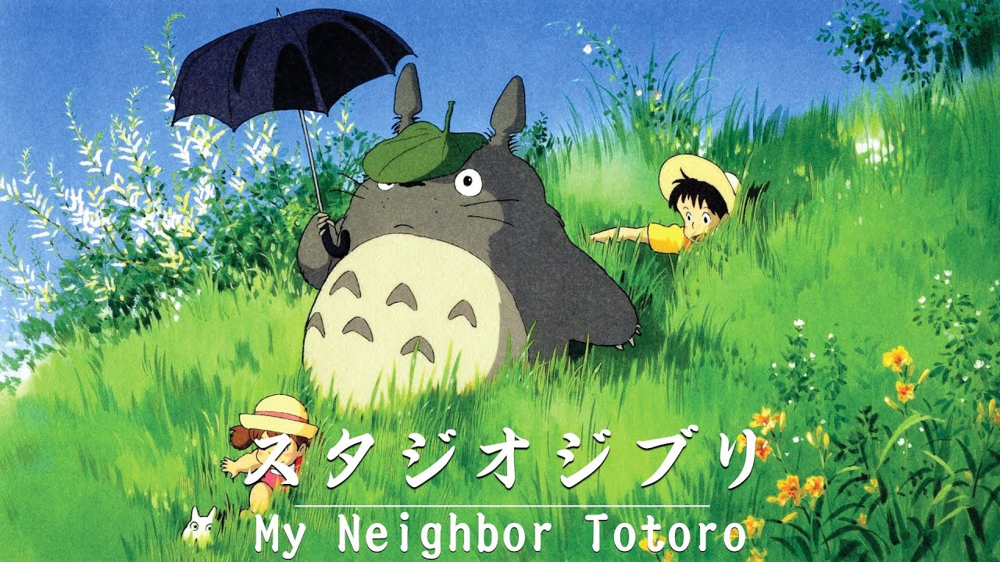
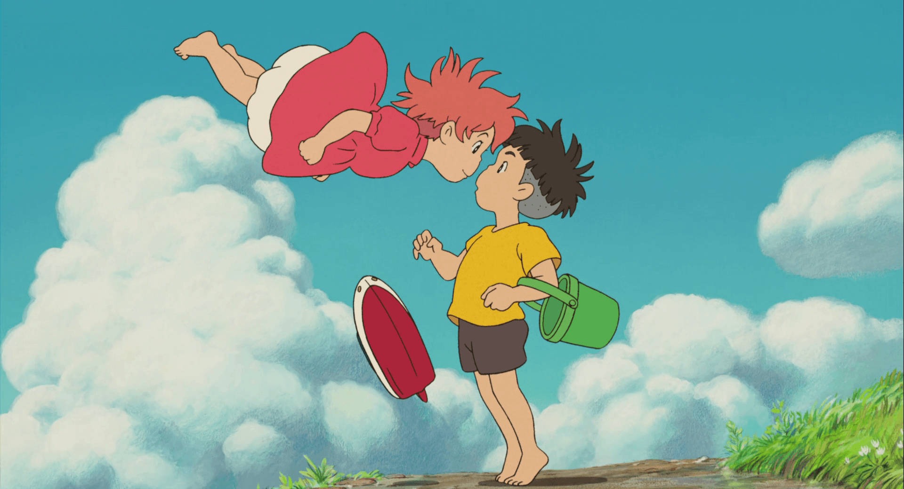

My Neighbor Totoro

My Neighbor Totoro is a heartwarming, magical Studio Ghibli classic set in 1950s rural Japan, following two young sisters, Satsuki and Mei, who move to an old country house with their father to be closer to their recovering mother in a nearby hospital. As the girls explore their enchanting new surroundings, they stumble upon a hidden world of friendly forest spirits, including mischievous little soot sprites and a massive, gentle, comforting creature named Totoro, the Keeper of the Forest. Through whimsical adventures and magical encounters like riding a multi legged Catbus through the night sky Totoro helps the sisters navigate their anxieties, fears, and longing for their mother. Capturing the pure innocence, wonder, and resilience of childhood, the film celebrates the comforting beauty of nature, the strong bonds of family, and the quiet magic found in everyday life.
Ponyo

Ponyo is a breathtaking and whimsical Studio Ghibli reimagining of The Little Mermaid, centered on a curious goldfish princess named Ponyo who escapes from her deep-sea home and meets Sosuke, a kind five-year-old boy living on a cliff by the ocean. After Sosuke saves her, Ponyo develops a fierce desire to become human, accidentally unleashing a powerful ancient magic that disrupts the balance of nature and triggers massive, ancient ocean storms. As the sea levels rise and flood the town, the two children embark on a magical, toy-boat journey across the submerged landscape. To save the world from ecological collapse, Ponyo must choose to give up her magical powers and live as a mortal girl, relying on the pure, unwavering bond of friendship and devotion between her and Sosuke.